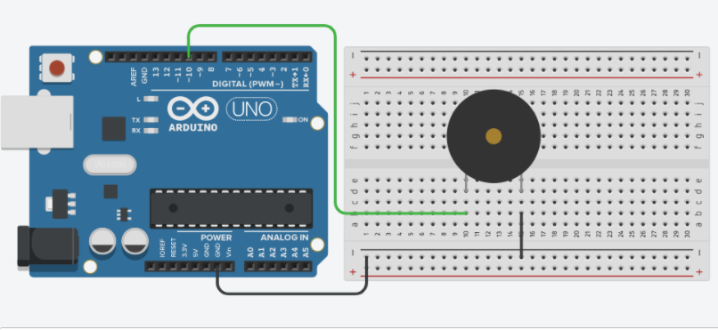

Since I have played with TFT screen during the class, I decided to play with the buzzer.
The first step is to set up the circuit. It is relatively simple. The resistor I used here is a 470 ohm resistor.

Then, I took the original code from this website, which has pre-identified the notes and duration.